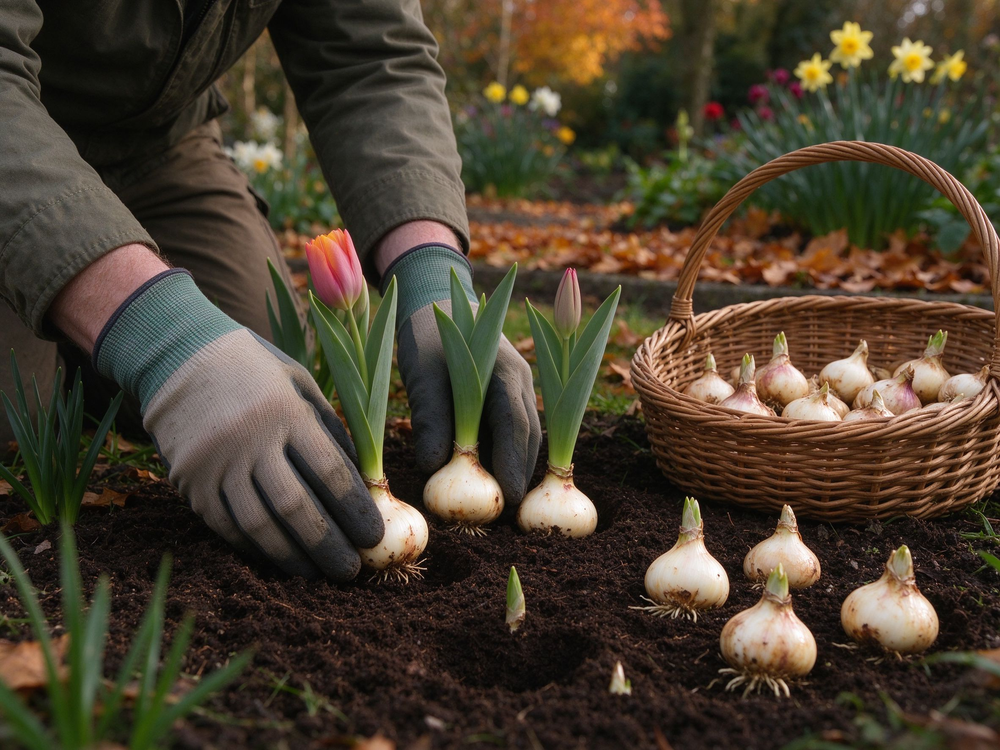

Planting Spring Bulbs in Fall: Tulips, Daffodils & Alliums
Here's the quiet secret of gardeners who get the earliest, cheeriest spring color: they did almost nothing in autumn. Spring-flowering bulbs are planted in fall, sit dormant through winter, and burst out of the ground weeks before anything else wakes up. It's the easiest, most reliable kind of planting there is — no seedlings to babysit, no grow lights, just a hole, a bulb, and a good winter.
Why Fall Is the Only Right Time
Bulbs need a period of cold to trigger flower formation — a process called vernalization. Planted in autumn, they root quietly in cooling soil, then flower on cue as days lengthen. Plant the same bulb in spring and it will likely rot, sulk, or flower poorly. So the window is roughly when soil temperatures drop to about 10°C (50°F) and before the ground freezes — for most of the northern hemisphere that means late September through November.
The Easy Bulbs to Start With
- Tulips — the classic. Plant 15–20 cm (6–8 in) deep, 10–15 cm apart, pointed end up. Choose species tulips or Darwin hybrids for the best return.
- Daffodils (narcissus) — the most foolproof bulb of all. Deer and rodents usually leave them alone, and they naturalize and multiply year after year.
- Alliums — tall, architectural purple globes that bloom in late spring and are adored by pollinators. Almost nothing eats them.
- Crocus — tiny, early, and cheerful; plant shallowly (about 8 cm) and they'll often pop up through late snow.
How to Plant, Step by Step
- Pick a sunny spot — bulbs want full sun while they're growing in spring. Under deciduous trees is fine; they finish before the canopy leafs out.
- Loosen the soil — dig to about twice the bulb's height, and mix in a little compost for drainage. Bulbs rot in waterlogged ground.
- Plant pointed end up — set each bulb in its hole at a depth of roughly three times its own height, then backfill.
- Space them — tight planting gives a fuller display; about 10–15 cm between bulbs is the usual rule.
- Water once, then leave them — autumn rain usually does the rest. A layer of mulch keeps the soil evenly cold and protects against heaving frosts.
The Mistake That Kills Most Bulbs
It isn't cold, and it isn't neglect — it's wet, poorly drained soil. A bulb sitting in a soggy spot over winter simply rots. If your soil is heavy clay, plant in raised beds or containers, or add grit to the planting hole. In pots, make sure there are drainage holes and lift the pot onto feet so water escapes.
Protecting Bulbs From Wildlife
- Squirrels and deer love tulip bulbs — daffodils, alliums, and fritillaria are reliably ignored. Plant tulips among daffodils as a natural shield.
- Wire mesh laid just under the surface deters digging rodents without harming them.
- Leave the foliage after flowering — the leaves feed next year's bulb. Cut them back only once they've yellowed and died down naturally.
What to Expect Next Spring
The first crocus can appear while frost is still on the ground, followed by daffodils, then tulips and alliums. You'll do nothing between now and then — which is exactly the appeal. Plant a handful this autumn, and by spring you'll wonder why you didn't start years ago.